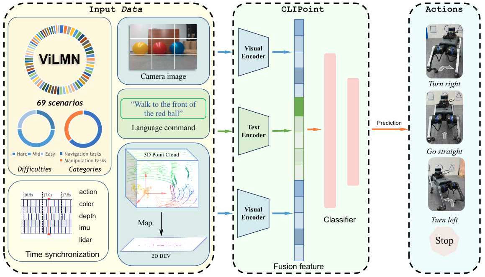

ViLMN Architecture
ViLMN has up to 43 tasks, which can be divided into navigation tasks and manipulation tasks. In addition, based on different interfering factors, we have expanded 43 tasks to 69 scenarios, which will be beneficial for the training of various robot models.
Learning from ViLMN
To evaluate the efficiency of the ViLMN dataset, we propose a baseline model, CLIPoint, which integrates the robust semantic understanding of the CLIP model with global information derived from LiDAR. The model pipeline is shown in the figure. To align the point cloud with language prompts and RGB observation, we project the 3D point cloud data onto a 2D BEV map, where depth is represented without color information.

Experimental phenomena
Manipulation Task